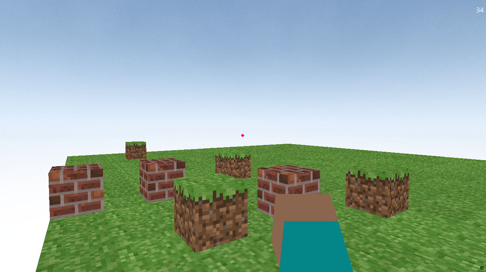
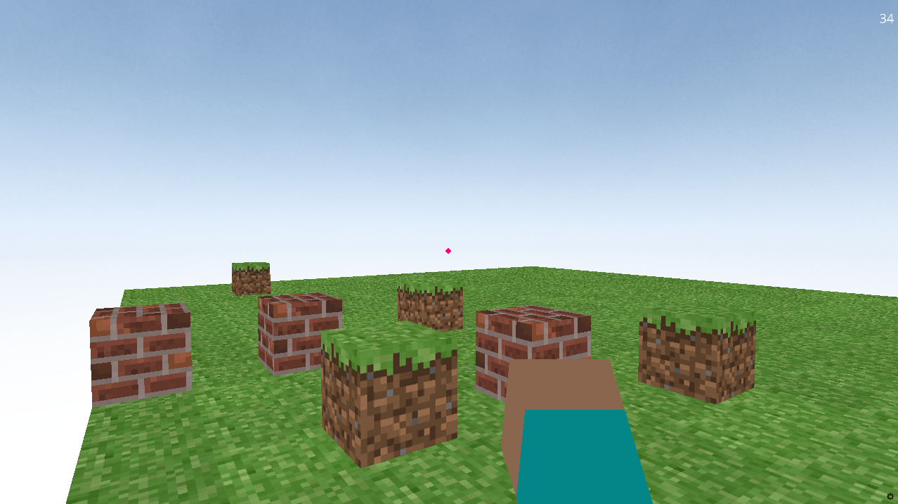

⚒️ Minecraft with Ursina in Python 🐍

✨ Features 🛠️
- 🧱 Build blocks in a voxel environment.
- 👁️ First-person perspective using FirstPersonController.
- 🎮 Basic game mechanics using the Ursina Engine.
📋 Requirements 📦
- 🐍 Python 3.7+
- 🛠️ Ursina Engine
- 🧮 Numpy
⚙️ Installation and Running the Game 🕹️
🪟 Windows
- Clone the repository:
git clone https://github.com/Yixboost/Minecraft-with-Ursina-Python.git cd Minecraft-with-Ursina-Python - Install the dependencies:
pip install -r requirements.txt - Run the game:
python "Minecraft Python (Ursina Engine).py"
🐧 Linux
- Clone the repository:
git clone https://github.com/Yixboost/Minecraft-with-Ursina-Python.git cd Minecraft-with-Ursina-Python - Install the dependencies:
pip install -r requirements.txt - Run the game:
python3 "Minecraft Python (Ursina Engine).py"
📝 Game Description 🎮
This project is a simple Minecraft clone developed in Python using the Ursina Engine. It allows players to build and interact with blocks in a voxel-based world. The game runs in a first-person perspective with basic controls for moving and building. 🧱👾
🕹️ Controls 🎮
- W, A, S, D: Move 👣
- Space: Jump 🦘
- Left Mouse Button: Break block 💥
- Right Mouse Button: Place block 🧱
- Use the numbers 0-9 to use different blocks 🔢
📸 Screenshots 🌍
 

🤝 Creators ✍️
This project was created by:
- Jonas van Leeuwen (GitHub: jonasvanleeuwen19)
- Valdtaniem (GitHub: Valdtaniem)
🎉 Enjoy building your world in this Minecraft-like game using the Ursina Engine! 🏗️👾